Prima întâlnire a delegațiilor din Austria, Letonia, Olanda, Italia și România.
Plantăm împreună un brăduleț, la începutul primăverii- 25 aprilie 2014. Pentru ca puieții să se transforme în copaci și acțiunile de despădurire să fie contracarate eficient, devine din ce în ce mai clar că este important să plantezi şi, în acelaşi timp, la fel de important este să ai grijă de ceea ce ai plantat.
| 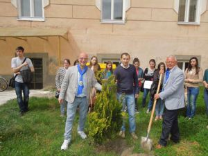 |
Vizită la Colegiul Agricol “Alexandru Borza” din Geoagiu.
Suntem întâmpinați cu pâine și sare. Pâinea e străvechi simbol al vieţii şi sarea, „mama lui Dumnezeu“, cum este denumită în zicerile din popor. Importanţa sării pentru comunităţile umane este binecunoscută, nu doar sub raport economic, ci şi spiritual. Nevoia de sare, atât pentru oameni, cât şi pentru animale, a făcut ca aşezările din apropierea izvoarelor şi lacurilor sărate să fie mai numeroase încă din preistorie, în special în rândul populaţiilor de agricultori.
| 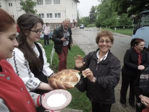 |
Letonia ne-a primit cu brațele deschise.
Școala KULDÏGAS TEHNOLOĞIJU UN TÜRISMA PROFESIONALA VIDUSSKOLA este bine cunoscută în partea de vest a Letoniei. Aici învață cursanți din toată partea de vest și chiar din partea centrală din Letonia. Școala a fost înființată în 1989, este școală de stat a Ministerului Educației și Științei din Letonia.
| 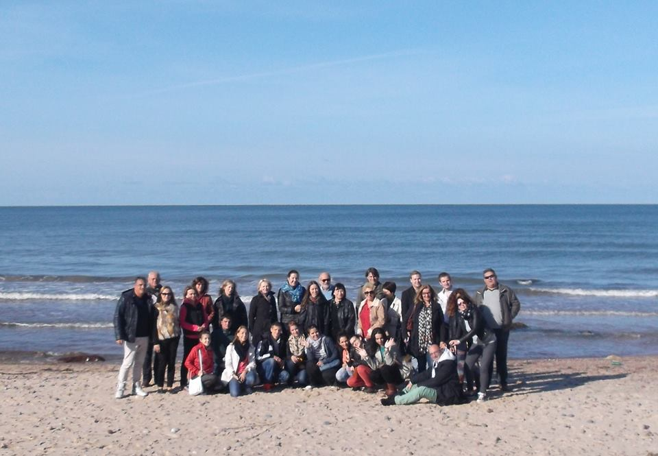 | 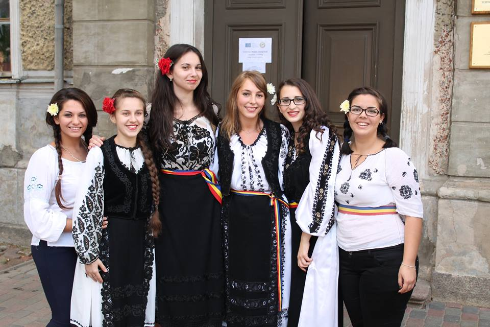 |
Dezbatere după întâlnirea din Krems.
Am împărtășit colegiilor impresiile dobândite după întâlnirea din Austria, primindu-ne cu brațele deschise. Am fost foarte impresionați de cunoștiințele bogate în gastronomie și în același timp de modul original de a prezenta diferitele feluri de mâncare aparținând artei culinare specifice.
| 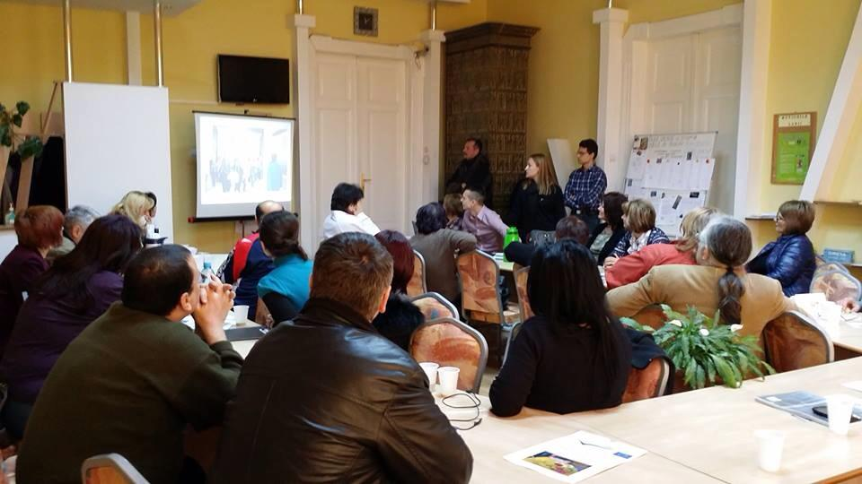 | 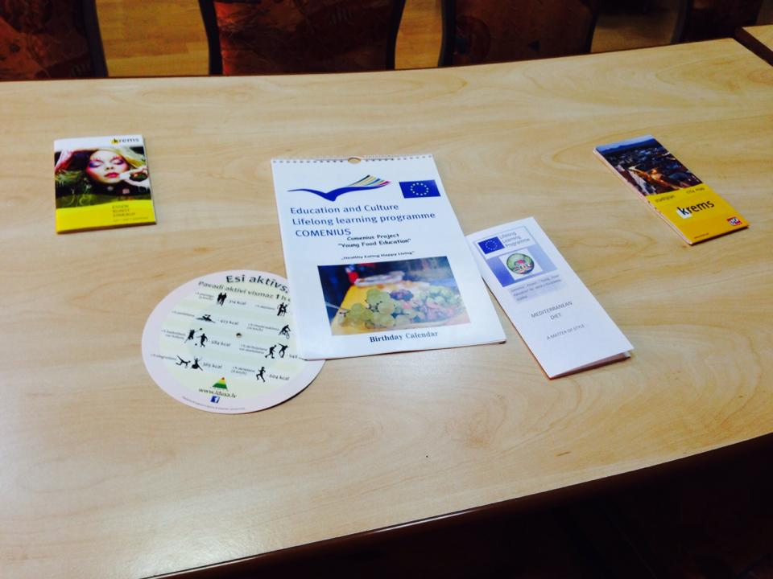 |
Dezbatere Comenius.
Pe 6 martie am avut o dezbatere pe tema principală a proiectului Comenius, încercând să ne concentrăm asupra gradului de conștientizare al participanților, a implicării în activitățile informative și practice ale proiectului și de asemenea, pe detectarea beneficiilor aduse de stilul nostru de viaţă. Am vrut să împărtășească experiențele trăite în timpul acestui proiect cu colegii, părinții și profesorii care sunt implicați.
| 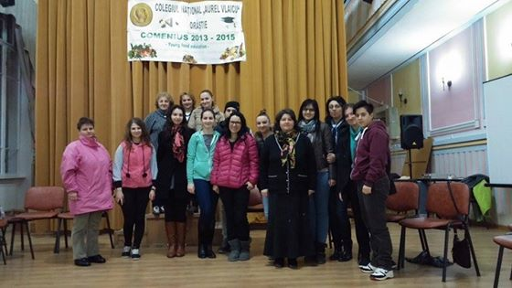 |  |
Dezbatere după întâlnirea din Arnhem.
Am prezentat impresiile dobândite după întâlnirea din Olanda. Am fost impresionaţi de modul de alimentație al oamenilor de acolo. Se pune foarte mult accent pe hrana sănătoasă, fiind o mare diversitate de feluri de mâncare. Olandezii au fost ospitalieri, și ne-am simțit foarte bine alături de ei.
| 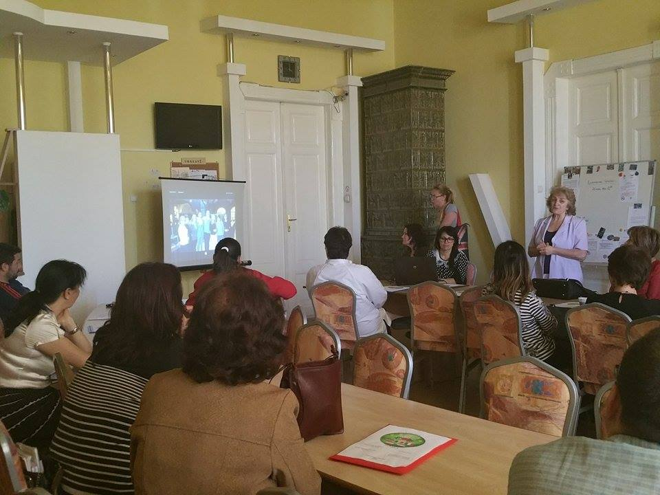 | 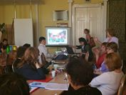 |
Articol în ziarul "Vorba" depre întâlnirea din Capri.
,,Activitățile au fost realizate cu grupul de elevi din liceu, care au experimentat timp de câteva luni alimentația sănătoasă, și-au monitorizat comportamentul alimentar cu ajutorul jurnalului alimentar și - împreună cu părinții lor - au împărtășit apoi echipei de proiect ce efecte a avut asupra comportamentului lor alimentar această experientă."
| 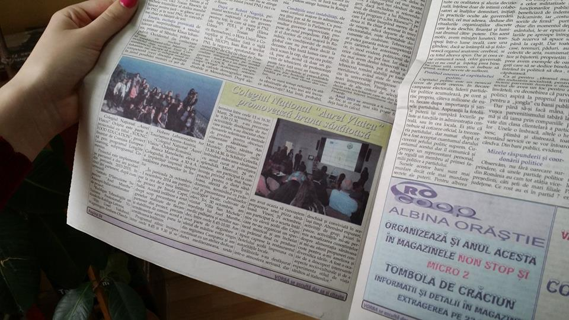 | 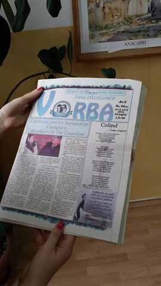 |
Prezentarea deplasării din Letonia, într-un articol în ziarul "Vorba".
,,Deschiderea școlii către noi parteneriate internaționale care să dezvolte competențele ligvistice, digitale, interpersonale, civice, interculturale și sociale ale elevilor din liceu și posibilitatea cunoașterii altor sisteme de învățământ. "
| 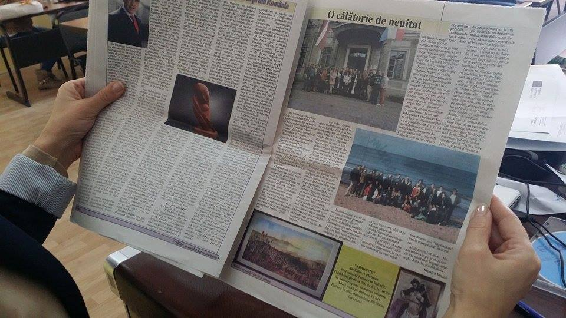 | 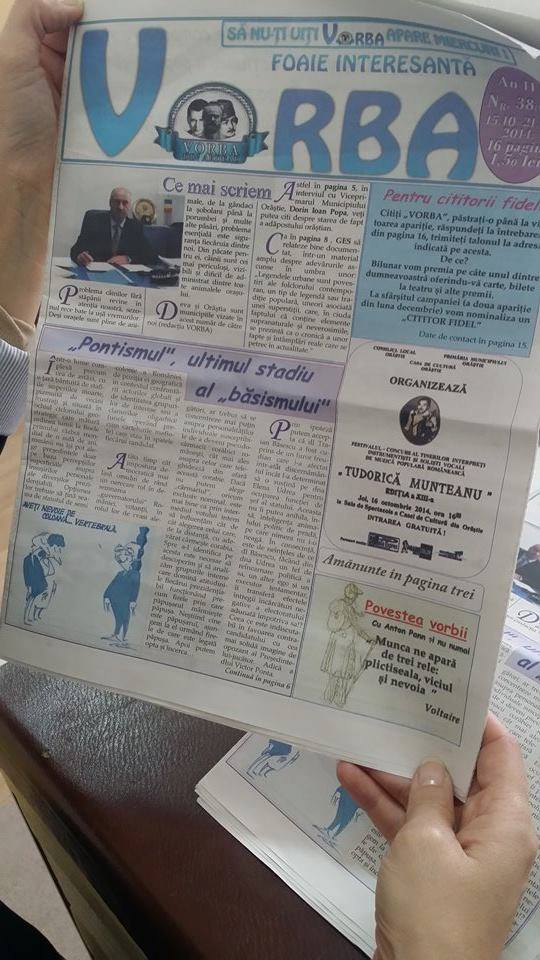 |